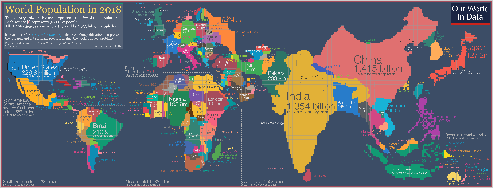

The world is quite large. Currently supporting nearly eight billion people and still growing, there is enough space for everyone to own at least an acre or two.
There may still be enough space if everyone who has every lived on the Earth suddenly appeared back into existence. This would certainly be true if Antarctica was included as liveable land.
I chose the Earth as my website topic because I was curious about certain statistics such as a country's major martial arts and esports. I included other country statistics such as population and language.
I used the common country statistics such as ethnicity and searched for a correlation between that and the country's major martial arts or esports.

The statistics of every country of the world was very easy to find. All the information on a country's population, language, exports, and imports are always updated yearly if not monthly.
I used the CIA World Factbook and the World Bank as the sources for most of my information.
However, the other country statistics like martial arts and esports required individual searching of every country and sometimes guessing based on tournament revenue sales.
Global World Records
Highest Population
Most Government Type
Most Sport Type
Most ESport Type
Most Language Type
Most Martial Art Type
1,400,000,000
Presidential Republic
Soccer
FIFA
English
Judo
Most Religion Type
Most Ethnicity Type
Most Currency Type
Most Export Type
Most Import Type
Most Geography Type
Christianity
Mestizo
Euro
Machinery
Machinery
Mountainous/Coastal
This graph dynamically breaks down each continent and country by data type.
Asia Population Data
The population of the world has grown immensely over the years, as well as the rise and fall of kingdoms, empires, and civilizations.
This table shows all of the raw data collected from countries around the world.
Some things I noticed were one or two major data types towered over other data types on every continent.
For example, the language of Arabic is the main language in Asia, and Judo is the main martial art in Europe.
Every continent has a common data type whether it is language or sport, but each continent has its own distinct preferences.
Each country influences their surrounding countries no matter their population, language, ethnicity, currency, or geography.